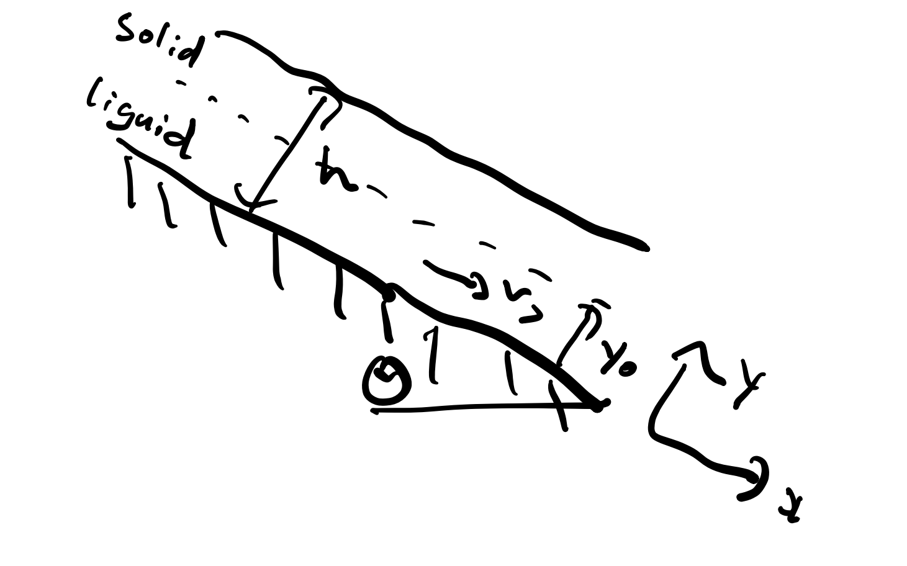

Question 1
Force balance on annulus (same as for Newtonian as done in class):
\[ 2 \pi r \Delta r ( P(z) - P(z+ \Delta z) ) \]
\[ + \tau_{rz} (r + \Delta z) 2 \pi (r + \Delta r) \Delta z \]
\[ - \tau_{rz} (r) 2 \pi r \Delta z = 0 \]
Divide by \( 2 \pi \Delta z \Delta r \)
\[ - r \frac{P(z+\Delta z) - P(z)}{\Delta z} + \frac{\tau_{rz} (r+\Delta r) (r+\Delta r) - \tau_{rz}(r) r}{\Delta r} = 0 \]
Take limits: \(~ \lim_{\Delta r \rightarrow 0}, ~ \lim_{\Delta z \rightarrow 0}\)
\[ - r \frac{\partial P}{\partial z} + \frac{\partial}{\partial r} (\tau_{rz} r) = 0 \]
\[ \frac{\partial P}{\partial z} = - \frac{\Delta P}{L} \]
\[ \frac{d}{dr} (\tau_{rz} r) = - r \frac{\Delta P}{L}\]
\[ \tau_{rz} = - \frac{\Delta P}{2 L} r + \frac{A}{r} \]
Symmetry At \(r = 0, ~ \tau_{rz} = 0 ~ \therefore ~ A = 0 \)
\[ \tau_{rz} = - \frac{\Delta P}{2L} r \]
\[\tau_{rz} ~ \text{is negative} ~ \therefore \left| \frac{du_z}{d \partial r} \right| = - \frac{\partial u_z}{\partial r} \]
\[ \tau_{rz} = - k \left( - \frac{du_z}{dr} \right)^n \]
\[ \left( - \frac{d u_z}{d r} \right)^n = \frac{\Delta P}{2 L k} r \]
\[ \frac{du_z}{dr} = - \left( \frac{\Delta P}{2Lk} \right)^{\frac{1}{n}} r^{\frac{1}{n}} \]
\[ u_z = -\frac{-n}{n+1} \left( \frac{\Delta P}{2Lk} \right)^{\frac{1}{n}} r^{\frac{n+1}{n}} + B\]
\[ \text{at} ~ r = R, ~ u_z = 0 \]
\[ \therefore B = \frac{n}{n+1} \left( \frac{\Delta P}{2Lk} \right)^{\frac{1}{n}} R^{\frac{n+1}{n}} \]
\[ \therefore u_z = \frac{n}{n+1} \left( \frac{\Delta P}{2Lk} \right)^{\frac{1}{n}} (R^{\frac{n+1}{n}} - r^{\frac{n+1}{n}}) \]
Question 2

Note that I am showing how to do it with different axes than I used in class (and the angle is from the horizontal rather than the vertical)
Force balance in Y direction (only gravity and viscous forces):
\[ (\tau_{yx}(y + \Delta y) - \tau_{yx} (y)) \Delta x \]
\[ + \rho g_x \Delta x \Delta y = 0 \]
Divide by \(\Delta x \Delta y\)
\[ \frac{\tau_{yx}(y+\Delta y) - \tau_{yx}(y)}{\Delta y} + \rho g_x = 0 \]
Take limit: \(\lim_{\Delta y \rightarrow 0}\)
\[ \frac{d\tau_{yx}}{dy} = -\rho g_x \]
\[ g_x = \sin(\theta g) \]
\[ \tau_{yx} = - \rho g \sin(\theta) y + A \]
No shear at the free surface:
\[ \tau_{yx} = 0 ~ \text{at} ~ y =h \]
\[ \tau_{yx} = \rho g \sin(\theta) (h-y)\]
Solid / Liquid like transition
\[ \tau_{yx} = \tau_{0} \]
\[ \tau_{0} = \rho g \sin(\theta)(h - y_0) \]
\[ y_0 = h - \frac{\tau_0}{\rho g \sin(\theta)} \]
Liquid region: \( y < y_0\), \(\tau_{yx}\) is +v.e. everywhere (note that this is the opposite of when the axes run from the surface)
\[ \therefore \left| \frac{d v_x}{dy} \right| = \frac{dv_x}{dy} \]
\[ \tau_{yx} = ( \mu_{\infty} \frac{dv_x}{dy} + \tau_0) \]
\[ \mu_{\infty} \frac{dv_x}{dy} + \tau_0 = \rho g \sin(\theta)(h-y) \]
\[ \frac{dv_x}{dy} = \frac{\rho g \sin(\theta)}{\mu_{\infty}} ( h-y) - \frac{\tau_0}{\mu_{\infty}} \]
\[ v_x = \frac{\rho g \sin(\theta)}{\mu_{\infty}} ( hy - \frac{y^2}{2} ) - \frac{\tau_0}{\mu_{\infty}} y + B \]
\[ \text{at} ~ y = 0, ~ v_x = 0 ~ \therefore B = 0\]
if \(y < y_0\):
\[ v_x = \frac{\rho g \sin(\theta)}{\mu_{\infty}} ( hy - \frac{y^2}{2} ) - \frac{\tau_0}{\mu_{\infty}} y \]
if \(y < y_0\):
\[ v_x = \frac{\rho g \sin(\theta)}{\mu_{\infty}} ( hy_0 - \frac{y^2_0}{2} ) - \frac{\tau_0}{\mu_{\infty}} y_0 \]
where \(y_0 = h - \frac{\tau_0}{\rho g \sin(\theta)}\)
Initially just at rest: \(y_0 = 0\),
\[ h = \frac{\tau_{0 ~ original}}{\rho g \sin(\theta)} \]
\[ \tau_{0 ~ original} = 4905 ~ \text{Pa} \]
After rain:
\[ \tau_0 = 3924 ~ \text{Pa} \]
\[ y_0 = 0.2 ~ text{m}\]
\[ v_{max} = \frac{\rho g \sin(\theta)}{\mu_{\infty}}(hy_0 - \frac{y^2_0}{2}) - \frac{\tau_0}{\mu_{\infty}} y_0 \]
\[ v_{max} = 2.981 ~ \text{m}/\text{s} \]
{kind=link}